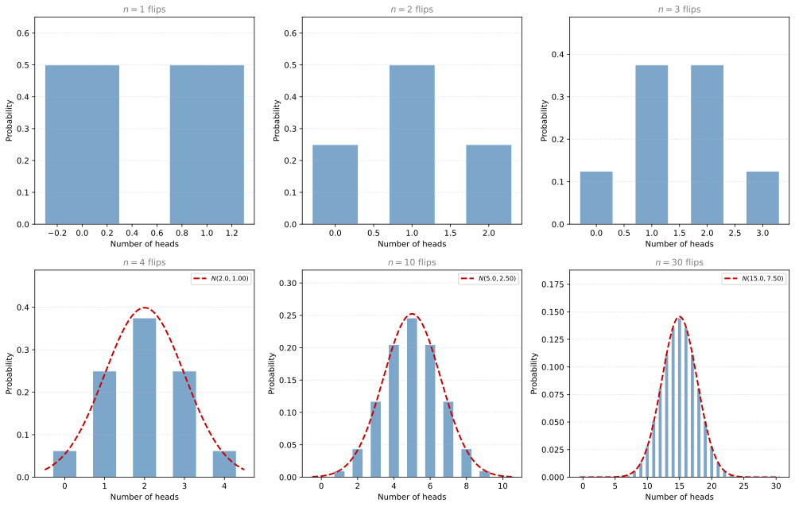
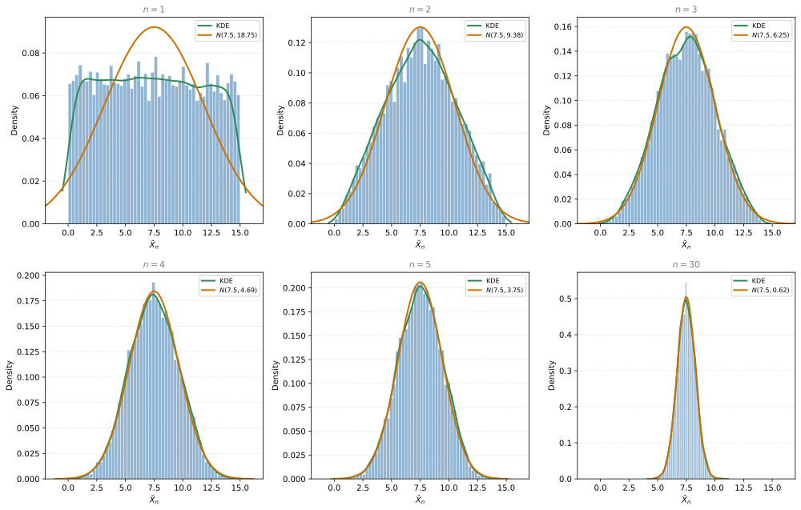
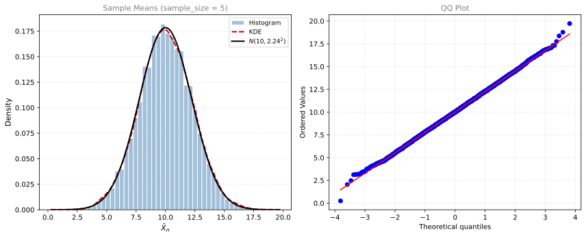
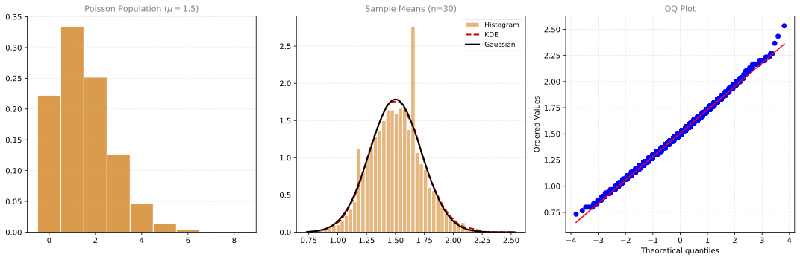

Central Limit Theorem
statistics
The normal distribution appears in a lot of places. Here is one that perhaps you did not expect.
Take any distribution, no matter how skewed. Now take a few samples (always the same number), compute their average, and repeat this many times. Plot all those averages. What do you get? A normal distribution, regardless of what distribution you started with.
This is one of the most important results in statistics. It is called the Central Limit Theorem (CLT).
Discrete Example: Coin Flips
Consider a fair coin where the random variable \(X\) is the number of heads in \(n\) flips. For a single coin flip, \(X = 1\) (heads) or \(X = 0\) (tails), each with probability \(\frac{1}{2}\). This is a discrete random variable with a flat distribution.
What happens to the distribution as we increase the number of coin flips?
As you can see, with just 1 coin the distribution is flat (equal chance of 0 or 1 heads). But as \(n\) increases, the shape looks more and more like a bell curve. By \(n = 10\), it is already very close to a normal distribution.
Why This Works
Counting the number of heads in \(n\) coin flips is the same as adding \(n\) Bernoulli random variables:
\[ S_n = X_1 + X_2 + \cdots + X_n \]
where each \(X_i = 1\) (heads) or \(X_i = 0\) (tails). The Central Limit Theorem says that as \(n\) increases, the distribution of this sum looks more and more like a Gaussian.
Mean and Variance
For \(n\) coin flips with probability \(p\) of heads:
- Mean: \(\mu = np\)
- Variance: \(\sigma^2 = np(1 - p)\)
For a fair coin (\(p = 0.5\)):
| \(n\) (flips) | Mean (\(np\)) | Variance (\(np(1-p)\)) |
|---|---|---|
| 1 | 0.5 | 0.25 |
| 2 | 1.0 | 0.50 |
| 3 | 1.5 | 0.75 |
| 4 | 2.0 | 1.00 |
| 10 | 5.0 | 2.50 |
As \(n\) becomes sufficiently large, the distribution of the number of heads converges to:
\[ S_n \sim N(np,\; np(1-p)) \]
Review Questions
1. What does the Central Limit Theorem say in plain language?
TipAnswer
If you take a large enough number of i.i.d. random variables and compute their sum (or average), the distribution of that sum will be approximately normal, regardless of the original distribution of the individual variables.
2. For 100 fair coin flips, what are the mean and standard deviation of the number of heads?
TipAnswer
Mean \(= np = 100 \times 0.5 = 50\). Variance \(= np(1-p) = 100 \times 0.5 \times 0.5 = 25\). Standard deviation \(= \sqrt{25} = 5\). So the number of heads is approximately \(N(50, 25)\), meaning most of the time you will get between 45 and 55 heads (within one standard deviation).
3. Why is counting heads in \(n\) flips equivalent to summing \(n\) Bernoulli variables?
TipAnswer
Each flip produces a Bernoulli random variable: \(X_i = 1\) if heads, \(X_i = 0\) if tails. The total number of heads is \(S_n = X_1 + X_2 + \cdots + X_n\). This is a sum of i.i.d. variables, which is exactly the setup the CLT describes.
Continuous Example: Wait Times
The CLT does not only work for discrete variables. Let us see it with a continuous random variable.
Consider a tech support line where the wait time \(X\) follows a uniform distribution between 0 and 15 minutes:
\[ X \sim \mathcal{U}(0, 15) \]
Every interval of the same length has the same probability of occurring, giving a flat probability density function.
Now suppose you record the wait time on \(n\) calls and compute the average:
\[ \bar{X}_n = \frac{1}{n}\sum_{i=1}^{n} X_i \]
What does the distribution of \(\bar{X}_n\) look like as \(n\) increases?

For \(n = 1\), the histogram looks uniform (flat). For \(n = 2\), it becomes triangular. By \(n = 4\) or \(5\), it is nearly indistinguishable from a Gaussian. The red dashed line shows the normal distribution with the same mean and variance. As \(n\) increases, the fit gets better and better.
Mean and Variance of the Sample Average
You might ask: what are the mean and variance of the variable \(\bar{X}_n\) (the average of \(n\) calls)?
Remember, \(\bar{X}_n\) is defined as:
\[ \bar{X}_n = \frac{1}{n}\sum_{i=1}^{n} X_i \]
Mean of \(\bar{X}_n\)
The mean of \(\bar{X}_n\) is, by definition, the expectation of the average of \(n\) variables. By linearity of expectation, you can pull the \(\frac{1}{n}\) out and take the expectation of each \(X_i\) separately. Since all variables are identically distributed (they all come from the same population), each \(\mathbb{E}[X_i] = \mu\). So you get:
\[ \mu_{\bar{X}_n} = \mathbb{E}[\bar{X}_n] = \frac{1}{n} \sum_{i=1}^{n} \mathbb{E}[X_i] = \frac{1}{n} \cdot n\,\mathbb{E}[X] = \mathbb{E}[X] \]
The mean of the average is just the population mean \(\mathbb{E}[X]\). For the uniform(0, 15) distribution, this is 7.5 no matter how many calls you average. This is what you saw in the histograms: they are always centered at 7.5.
Variance of \(\bar{X}_n\)
For the variance, the constant \(\frac{1}{n}\) comes out squared (recall from the probability section that \(\text{Var}(aX) = a^2 \text{Var}(X)\)). Also, because the variables are independent, the variance of the sum becomes the sum of the variances. This gives:
\[ \sigma^2_{\bar{X}_n} = \text{Var}(\bar{X}_n) = \frac{1}{n^2} \sum_{i=1}^{n} \text{Var}(X_i) = \frac{1}{n^2} \cdot n\sigma_X^2 = \frac{\sigma_X^2}{n} \]
This is very interesting: the mean stays the same, but the variance gets smaller and smaller as \(n\) grows. This makes sense because the more variables you average, the more likely you are to be close to the population mean, so there is less spread.
For the uniform(0, 15) distribution, the population variance is \(\sigma_X^2 = 18.75\). So:
| \(n\) | Mean of \(\bar{X}_n\) | Variance of \(\bar{X}_n\) (\(= \sigma_X^2/n\)) |
|---|---|---|
| 1 | 7.5 | 18.75 |
| 2 | 7.5 | 9.375 |
| 5 | 7.5 | 3.75 |
| 10 | 7.5 | 1.875 |
| 30 | 7.5 | 0.625 |
This is exactly what you saw in the histograms: as \(n\) increases, the distribution gets narrower and narrower around 7.5.
Standardizing and Formal Statement
One common way to visualize the CLT is by standardizing. Since the mean is always \(\mu\) but the variance depends on \(n\) (it is \(\sigma^2/n\)), it is easier to compare distributions for different values of \(n\) when you standardize the average.
By standardizing (subtracting the mean and dividing by the standard deviation), you get:
\[ \text{As } n \to \infty: \quad \frac{\frac{1}{n}\sum_{i=1}^{n} X_i - \mathbb{E}[X]}{\sigma_X} \sqrt{n} \sim \mathcal{N}(0, 1^2) \]
This says: no matter what the original distribution looks like, the standardized average converges to a standard normal distribution.
There is a practical benefit to this. If you do not actually know the population mean and variance, you still know that as \(n\) increases, the average will approximately have a Gaussian distribution. Standardizing lets you work with \(\mathcal{N}(0, 1)\) tables regardless of the original parameters.
Equivalently, in terms of sums rather than averages:
\[ \text{As } n \to \infty: \quad \frac{\sum_{i=1}^{n} X_i - n\mathbb{E}[X]}{\sqrt{n}\,\sigma_X} \sim \mathcal{N}(0, 1^2) \]
You can arrive at this by taking the common factor \(\frac{1}{n}\) and rearranging terms.
This result holds regardless of the original distribution of \(X\), as long as the variables are i.i.d. with finite mean and variance. This is the Central Limit Theorem.
Rule of Thumb: \(n \geq 30\)
In practice, the CLT approximation is usually reliable when \(n \geq 30\). However:
- If the original distribution is already symmetric (like the uniform), the normal shape appears quickly (even \(n = 4\) or \(5\) may suffice).
- If the original distribution is highly skewed, you may need \(n\) much larger than 30 for the bell shape to emerge.
Review Questions
4. Why does the variance of \(\bar{X}_n\) decrease as \(n\) increases?
TipAnswer
Because \(\text{Var}(\bar{X}_n) = \frac{\sigma_X^2}{n}\). As you average more variables, individual deviations cancel each other out, producing a tighter distribution around the true mean. This is the mathematical reason behind the Law of Large Numbers as well.
5. A population has mean \(\mu = 50\) and variance \(\sigma^2 = 100\). If you take samples of size \(n = 25\) and compute the average, what are the mean and standard deviation of that average?
TipAnswer
Mean of \(\bar{X}_{25} = \mathbb{E}[X] = 50\). Variance \(= \sigma_X^2/n = 100/25 = 4\). Standard deviation \(= \sqrt{4} = 2\). So the sample average has a much tighter distribution (\(\sigma = 2\)) than the individual observations (\(\sigma = 10\)).
6. The CLT says “any distribution.” Are there any requirements?
TipAnswer
The variables must be i.i.d. with a finite mean and finite variance. If the variance is infinite (as in some heavy-tailed distributions), the CLT does not apply. In practice, most real-world data has finite variance, so the CLT applies broadly.
7. A researcher conducts a study by taking independent random samples. The results are:
| \(n\) | mean |
|---|---|
| 20 | 4.77 |
| 50 | 5.16 |
| 100 | 4.97 |
| 200 | 5.01 |
Assuming the experiment meets the conditions of the Law of Large Numbers, which sample mean is closest to the population mean?
- 4.77
- 5.16
- 4.97
- 5.01
TipAnswer
d. By the Law of Large Numbers, the largest sample size gives the best estimate of the population mean. With \(n = 200\), the sample mean of 5.01 is the closest to the true population mean.
8. Which of the following best describes the Central Limit Theorem?
- The CLT states that the mean of a population is always normally distributed.
- The CLT states that, under certain conditions, as the sample size increases, the sample mean approaches the population mean.
- The CLT states that, under certain conditions, as the sample size increases, the sampling distribution of the mean approaches a normal distribution, regardless of the distribution of the population.
- The CLT states that as the sample size increases, the variance of the population decreases.
TipAnswer
c. The CLT is about the distribution of sample means (not the mean itself approaching the population mean, which is the LLN). It says that regardless of the original population shape, the distribution of \(\bar{X}_n\) becomes Gaussian as \(n\) grows. Option b describes the Law of Large Numbers, not the CLT.
9. Which of the following statements about the Central Limit Theorem (CLT) is true?
- The CLT states that the distribution of sample means approaches a normal distribution as the sample size increases, regardless of the shape of the population distribution.
- The CLT states that the population mean will always be 0.
- The CLT suggests that the mean of a sample is always equal to the mean of the population.
- The CLT only applies to populations that already follow a normal distribution.
TipAnswer
a. The CLT states that the sampling distribution of the mean approaches a normal distribution as \(n\) increases, regardless of the original population shape. Option b is false (the mean can be anything). Option c describes a property of the expected value of the sample mean, not the CLT. Option d is false because the CLT works for any distribution with finite mean and variance.
Summary
| Concept | Description |
|---|---|
| Central Limit Theorem | The sum (or average) of many i.i.d. random variables converges to a normal distribution |
| Applies to | Any distribution (discrete or continuous), as long as \(n\) is large enough |
| Mean of \(\bar{X}_n\) | Same as population mean: \(\mathbb{E}[X]\) |
| Variance of \(\bar{X}_n\) | Population variance divided by \(n\): \(\sigma_X^2/n\) |
| Standardized form | \(\frac{\frac{1}{n}\sum X_i - \mathbb{E}[X]}{\sigma_X}\sqrt{n} \sim \mathcal{N}(0, 1)\) |
| Rule of thumb | Usually need \(n \geq 30\), but symmetric distributions converge faster |
Lab: CLT in Practice
In this section you will see the CLT in action by sampling from different distributions and observing the convergence.
import numpy as np
import matplotlib.pyplot as plt
from scipy import stats
from scipy.stats import norm, gaussian_kde
def sample_means(data, sample_size):
"""Draw 10,000 samples of the given size and return their means."""
means = []
for _ in range(10_000):
sample = np.random.choice(data, size=sample_size)
means.append(np.mean(sample))
return np.array(means)Gaussian Population
Start with a Gaussian population (\(\mu = 10\), \(\sigma = 5\), 100,000 observations):
%config InlineBackend.figure_formats = ['svg']
mu = 10
sigma = 5
gaussian_population = np.random.normal(mu, sigma, 100_000)
sample_size = 5
gaussian_sample_means = sample_means(gaussian_population, sample_size=sample_size)
mu_sample_means = mu
sigma_sample_means = sigma / np.sqrt(sample_size)
print(f"Theoretical mean of sample means: {mu_sample_means:.2f}")
print(f"Theoretical std of sample means: {sigma_sample_means:.2f}")
print(f"Observed mean of sample means: {np.mean(gaussian_sample_means):.2f}")
print(f"Observed std of sample means: {np.std(gaussian_sample_means):.2f}")Theoretical mean of sample means: 10.00
Theoretical std of sample means: 2.24
Observed mean of sample means: 10.03
Observed std of sample means: 2.25%config InlineBackend.figure_formats = ['svg']
x_range = np.linspace(min(gaussian_sample_means), max(gaussian_sample_means), 200)
fig, (ax1, ax2) = plt.subplots(1, 2, figsize=(12, 5))
ax1.hist(gaussian_sample_means, bins=50, density=True, color='#4682B4', alpha=0.5,
edgecolor='white', label='Histogram')
kde = gaussian_kde(gaussian_sample_means)
ax1.plot(x_range, kde(x_range), color='#CC0000', linewidth=2, linestyle='--', label='KDE')
ax1.plot(x_range, norm.pdf(x_range, mu_sample_means, sigma_sample_means),
color='black', linewidth=2, label=f'$N({mu_sample_means}, {sigma_sample_means:.2f}^2)$')
ax1.legend(fontsize=9)
ax1.set_xlabel(r'$\bar{X}_n$', fontsize=11)
ax1.set_ylabel('Density', fontsize=11)
ax1.set_title(f'Sample Means (sample_size = {sample_size})', fontsize=11, color='gray')
ax1.grid(linestyle='--', alpha=0.3, axis='y')
stats.probplot(gaussian_sample_means, plot=ax2, fit=True)
ax2.set_title('QQ Plot', fontsize=11, color='gray')
ax2.grid(linestyle='--', alpha=0.3)
plt.tight_layout()
plt.show()
The KDE and Gaussian curve are nearly identical. The QQ plot is almost a perfect straight line. CLT holds even with sample_size = 5 for a Gaussian population.
Binomial Population
A skewed distribution: Binomial(\(n=5\), \(p=0.8\)).
%config InlineBackend.figure_formats = ['svg']
n_trials = 5
p = 0.8
binomial_population = np.random.binomial(n_trials, p, 100_000)
# Small sample size: CLT may not hold
sample_size = 3
binomial_sample_means = sample_means(binomial_population, sample_size=sample_size)
mu_sm = n_trials * p
sigma_sm = np.sqrt(n_trials * p * (1 - p)) / np.sqrt(sample_size)
x_range = np.linspace(min(binomial_sample_means), max(binomial_sample_means), 200)
fig, axes = plt.subplots(2, 2, figsize=(12, 10))
# n=3
axes[0, 0].hist(binomial_sample_means, bins=30, density=True, color='#2E8B57', alpha=0.5,
edgecolor='white', label='Histogram')
kde = gaussian_kde(binomial_sample_means)
axes[0, 0].plot(x_range, kde(x_range), color='#CC0000', linewidth=2, linestyle='--', label='KDE')
axes[0, 0].plot(x_range, norm.pdf(x_range, mu_sm, sigma_sm),
color='black', linewidth=2, label='Gaussian')
axes[0, 0].legend(fontsize=8)
axes[0, 0].set_title(f'sample_size = 3 (CLT may not hold)', fontsize=10, color='gray')
axes[0, 0].grid(linestyle='--', alpha=0.3, axis='y')
stats.probplot(binomial_sample_means, plot=axes[0, 1], fit=True)
axes[0, 1].set_title('QQ Plot (n=3)', fontsize=10, color='gray')
axes[0, 1].grid(linestyle='--', alpha=0.3)
# n=30
sample_size = 30
binomial_sample_means = sample_means(binomial_population, sample_size=sample_size)
sigma_sm = np.sqrt(n_trials * p * (1 - p)) / np.sqrt(sample_size)
x_range = np.linspace(min(binomial_sample_means), max(binomial_sample_means), 200)
axes[1, 0].hist(binomial_sample_means, bins=50, density=True, color='#2E8B57', alpha=0.5,
edgecolor='white', label='Histogram')
kde = gaussian_kde(binomial_sample_means)
axes[1, 0].plot(x_range, kde(x_range), color='#CC0000', linewidth=2, linestyle='--', label='KDE')
axes[1, 0].plot(x_range, norm.pdf(x_range, mu_sm, sigma_sm),
color='black', linewidth=2, label='Gaussian')
axes[1, 0].legend(fontsize=8)
axes[1, 0].set_title(f'sample_size = 30 (CLT holds)', fontsize=10, color='gray')
axes[1, 0].grid(linestyle='--', alpha=0.3, axis='y')
stats.probplot(binomial_sample_means, plot=axes[1, 1], fit=True)
axes[1, 1].set_title('QQ Plot (n=30)', fontsize=10, color='gray')
axes[1, 1].grid(linestyle='--', alpha=0.3)
plt.tight_layout()
plt.show()
With sample_size = 3, the CLT has not kicked in. With sample_size = 30, the fit is excellent.
Poisson Population
The Poisson distribution (\(\mu = 1.5\)) is skewed, but the CLT still works:
%config InlineBackend.figure_formats = ['svg']
poisson_mu = 1.5
poisson_population = np.random.poisson(poisson_mu, 100_000)
sample_size = 30
poisson_sample_means = sample_means(poisson_population, sample_size=sample_size)
sigma_sm = np.sqrt(poisson_mu) / np.sqrt(sample_size)
x_range = np.linspace(min(poisson_sample_means), max(poisson_sample_means), 200)
fig, axes = plt.subplots(1, 3, figsize=(15, 5))
axes[0].hist(poisson_population, bins=range(0, 10), density=True,
color='#CC7000', alpha=0.7, edgecolor='white', align='left')
axes[0].set_title(f'Poisson Population ($\\mu={poisson_mu}$)', fontsize=11, color='gray')
axes[0].grid(linestyle='--', alpha=0.3, axis='y')
axes[1].hist(poisson_sample_means, bins=50, density=True, color='#CC7000', alpha=0.5,
edgecolor='white', label='Histogram')
kde = gaussian_kde(poisson_sample_means)
axes[1].plot(x_range, kde(x_range), color='#CC0000', linewidth=2, linestyle='--', label='KDE')
axes[1].plot(x_range, norm.pdf(x_range, poisson_mu, sigma_sm),
color='black', linewidth=2, label='Gaussian')
axes[1].legend(fontsize=9)
axes[1].set_title(f'Sample Means (n={sample_size})', fontsize=11, color='gray')
axes[1].grid(linestyle='--', alpha=0.3, axis='y')
stats.probplot(poisson_sample_means, plot=axes[2], fit=True)
axes[2].set_title('QQ Plot', fontsize=11, color='gray')
axes[2].grid(linestyle='--', alpha=0.3)
plt.tight_layout()
plt.show()
Cauchy Distribution (CLT Fails!)
The Cauchy distribution has heavy tails and no defined mean or variance. The CLT does not apply:
%config InlineBackend.figure_formats = ['svg']
cauchy_population = np.random.standard_cauchy(1_000)
fig, (ax1, ax2) = plt.subplots(1, 2, figsize=(12, 5))
# sample_size = 30
cauchy_sample_means = sample_means(cauchy_population, sample_size=30)
stats.probplot(cauchy_sample_means, plot=ax1, fit=True)
ax1.set_title('QQ Plot (sample_size = 30)', fontsize=11, color='gray')
ax1.grid(linestyle='--', alpha=0.3)
# sample_size = 100
cauchy_sample_means_large = sample_means(cauchy_population, sample_size=100)
stats.probplot(cauchy_sample_means_large, plot=ax2, fit=True)
ax2.set_title('QQ Plot (sample_size = 100)', fontsize=11, color='gray')
ax2.grid(linestyle='--', alpha=0.3)
plt.tight_layout()
plt.show()
Even with sample_size = 100, the QQ plot is far from a straight line. The Cauchy distribution violates the CLT conditions (no finite mean or variance).
WarningWhen CLT Fails
The CLT requires the population to have a finite mean and variance. The Cauchy distribution has neither. No matter how large your sample size, the sample means will not converge to a Gaussian.
| Distribution | CLT holds? | Notes |
|---|---|---|
| Gaussian | Yes | Works even with very small sample sizes |
| Binomial | Yes | Needs \(n \geq 30\) for skewed cases |
| Poisson | Yes | Needs \(n \geq 30\) |
| Cauchy | No | Undefined mean/variance, CLT does not apply |